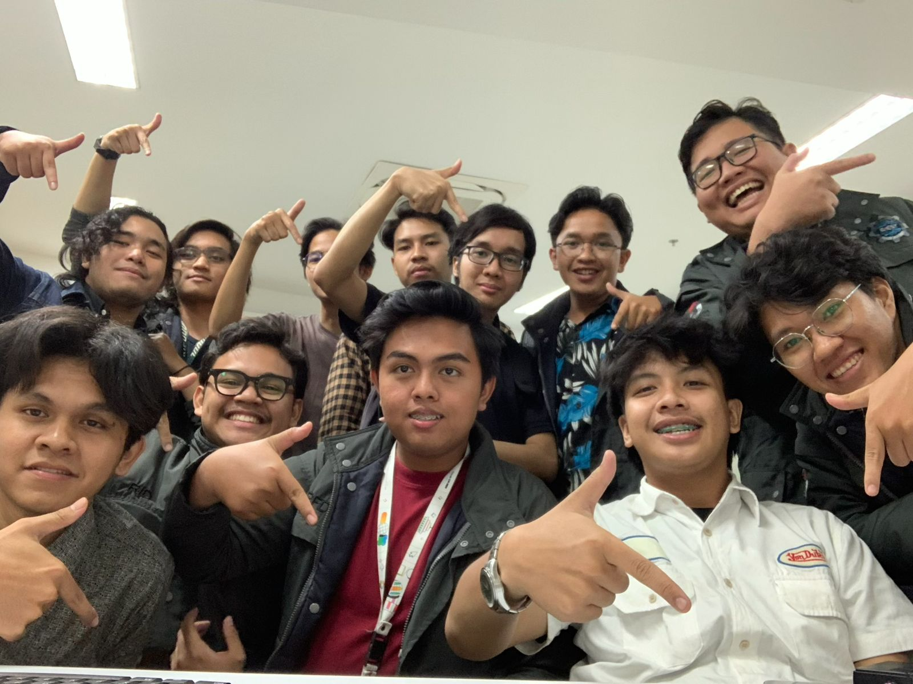
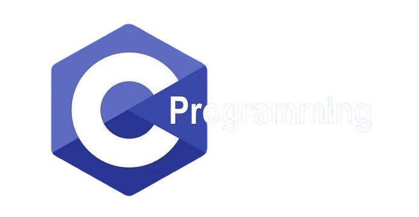

About Me

As an active student of Computer Engineering at Telkom University, I am deeply immersed in both the theoretical and practical aspects of this dynamic field. My studies emphasize the development of skills in both software and hardware, providing me with a well-rounded understanding of the integral components of technology.
Currently, my proficiency in these areas is still evolving, but my enthusiasm for learning and my dedication to mastering both domains drive me to continually enhance my knowledge and capabilities. I am committed to exploring advanced concepts and staying abreast of the latest advances to further refine my skills and contribute meaningfully to the field.
Skills
C Programming

The C language played a vital role in building my foundation in programming. As a low-level language close to the hardware, C taught me fundamental concepts such as memory management, variable allocation, and efficient data structures. By learning C, I gained a deep understanding of how computers work at a more fundamental level, such as how instructions are translated into operations in the CPU and how data is stored in memory.
In addition, C has a syntax that is often the basis for other modern programming languages. By mastering C, I find it easier and faster to learn other languages such as Python, PHP, and Kotlin, because many of their basic concepts and syntax structures are similar. C has built a strong foundation for me, allowing me to quickly adapt and master other more abstract or specific programming languages without significant difficulty.
Python
Python simplifies the process of data analysis with its simple syntax and rich libraries. I can quickly clean, process, and visualize data to find important patterns and trends. This helps a lot in making better data-driven decisions.
On the other hand, Python is also very useful in machine learning. With libraries like Scikit-Learn and TensorFlow, I can easily build, train, and test predictive models. This speeds up model development and allows me to get accurate results in the machine learning projects I work on.
Arduino

My first experience with Arduino launched me into a world of electronics possibilities. This microcontroller board was not only the first tool I used to bring my projects to life, but also a gateway to a deeper understanding of how electronic devices work. With Arduino, I learned programming, sensor control, and basic logic in a hands-on way. Every project I worked on with Arduino gave me a sense of satisfaction and added to my skills in this area, laying a solid foundation for my journey as an electronics developer.
Contact
Want to know more about me? Let's connect right away!